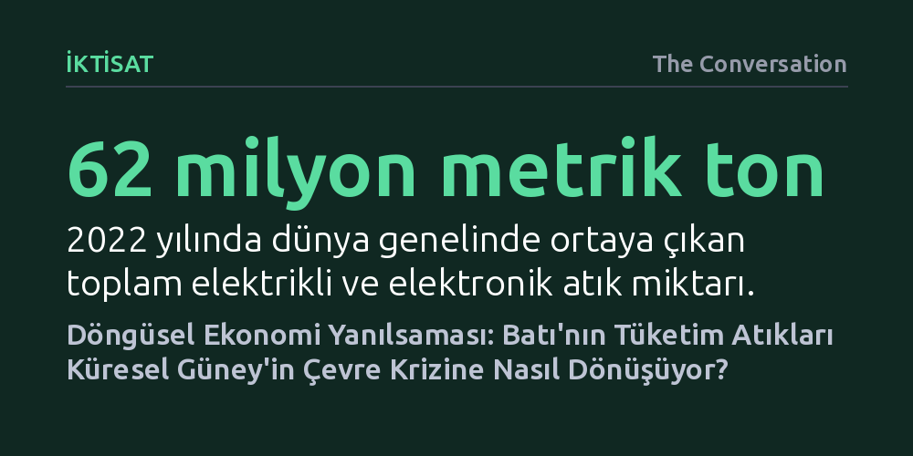

IKTISAT · The Conversation · 2026-09-11
Kuzey ülkelerinden Küresel Güney'e gönderilen milyonlarca ton ikinci el eşya ve elektronik atık, döngüsel ekonomi adı altında çevre kirliliğini yoksul bölgelere yıkıyor. Sorumluluk ve dönüşüm fonları sınırda bittiğinden, Batı tüketiminin ağır faturasını hedef ülkeler ödemek zorunda kalıyor.
Geri dönüşüm kutusuna kıyafet veya telefon bırakmanın yarattığı vicdani rahatlığı sorgulatarak, döngüsel ekonominin sadece atıkları değil, mali ve yasal sorumluluğu da sınır ötesine taşıması gerektiğini gösteriyor.

Eski bir akıllı telefonu toplama noktasına bıraktığımızda, yıpranmış kıyafetlerimizi bir derneğe bağışladığımızda ya da miadını dolduran bilgisayarımızı yenilediğimizde ekolojik bir iyilik yaptığımız hissine kapılırız. Ancak bu eşyaların yaşam döngüsü kapımızın önünde son bulmuyor; aksine binlerce kilometre uzakta, çoğunlukla Küresel Güney'in sırtına yüklenen çetin bir serüvene dönüşüyor. Sanayileşmiş zengin ülkeler her yıl milyonlarca metrik ton ikinci el giysi ve elektronik cihazı az gelişmiş ülkelere gönderirken, bu malların üretim ve tüketim aşamalarında biriken ağır çevresel ve sıhhi maliyetleri de aynı kargo konteynerlerine doldurup ihraç ediyor.
Batı Afrika'nın en hareketli ticaret merkezlerinden biri olan Gana'nın başkenti Akra'daki Kantamanto Pazarı, bu durumun en çıplak yaşandığı yerlerden biri. Dünyanın en büyük tekstil yeniden satış merkezlerinden sayılan pazara her hafta yüz binlerce ikinci el giysi boşaltılıyor. Bu balyaların içinden çıkan kıyafetlerin bir kısmı yerel terziler ve satıcılar eliyle yeniden ekonomiye kazandırılsa da, kalitesiz ya da giyilemeyecek durumdaki devasa bir bölümü doğrudan su yollarını tıkıyor, derme çatma çöplükleri dolduruyor veya kıyılarda yürümeyi imkânsız kılan dev atık tepeleri oluşturuyor.
Tekstilde yaşanan krizin benzeri, hatta çok daha tehlikelisi elektronik atık pazarında hüküm sürüyor. Küresel E-atık İzleme Raporu'na göre yalnızca 2022 yılında dünya çapında 62 milyon metrik ton elektrikli ve elektronik atık ortaya çıktı. Ancak bu devasa atık dağının sadece yüzde 22,3'ü resmî, belgelenmiş ve denetimli kanallarla toplanıp geri dönüştürülebildi. Geriye kalan yüzde 77'lik hacim, takibi güç küresel ağlara dağılarak denetimsiz biçimde el değiştiriyor.
Coğrafyacı Josh Lepawsky'nin işaret ettiği üzere, bu akış Kuzey'den Güney'e doğru tek yönlü ve basit bir çöp sevkiyatı değil. Tamir, parça sökümü, yeniden kullanım ve geri kazanımın iç içe geçtiği son derece karmaşık küresel ağlar işliyor. Afrika'nın birçok kentinde atık toplayıcıları, hiçbir koruyucu donanım olmadan ve ağır zehirli gazları soluyarak eski cihazlardan bakır ve alüminyum gibi kıymetli metalleri ayrıştırıyor. Bu insanlar kaynakların ziyan olmasını engelleyip ekonomik değer üretse de, kâr küresel tedarik zincirlerine akarken ölümcül sağlık riskleri ve kirlilik tamamen yerel toplulukların üzerine çöküyor.
Akademisyen Max Liboiron'un vurguladığı gibi, çevre tahribatı asla coğrafyaya eşit ya da tarafsız dağılmıyor; belirli zümreler tüketimin konforunu sürerken bedeli başkaları hayatlarıyla ödüyor. Bu dengesizliğin özü çok açık: "Materyaller küresel çapta dolaşırken çevresel sorumluluk sınırda duruyor." Ürünler Batı'da satılırken geçerli olan geri dönüşüm fonları, denetimler ve yasal güvenceler, eşyalar gümrükten çıktığı anda buharlaşıyor.
Döngüsel ekonomi teoride kaynak tüketimini azaltmayı, tamir ve yeniden kullanım yoluyla ürün ömrünü uzatarak atık üretimini en aza indirmeyi vaat eder. Ancak döngüsellik tartışmaları uzun zamandır yalnızca malzeme akışlarına ve mühendislik temelli teknik çözümlere kilitlenmiş vaziyette. Bu mekanik yaklaşım, sistemin altında yatan toplumsal, sınıfsal ve coğrafi adaletsizlikleri göz ardı ediyor.
Oysa Küresel Güney'deki gerçeklik kurumsal Batı modellerinden oldukça farklı. Gelişmekte olan ülkelerde resmî teşvikler olmadan, bütünüyle sokaktaki insanların emeğiyle çalışan tamir ve malzeme kurtarma sistemleri zaten on yıllardır hayati bir döngü sağlıyor. Buna rağmen bu sistemleri omuzlayan yerel işçiler ve küçük işletmeler, ne küresel döngüsel ekonomi politikalarının belirlendiği masalara davet ediliyor ne de yeşil dönüşüm fonlarından pay alabiliyor.
Ortadaki tabloyu düzeltmenin çözümü ikinci el eşya ticaretini toptan yasaklamak değil. Zira bu ticaret milyonlarca insana geçim kapısı açıyor, ürünlerin ömrünü uzatarak karbon salımını düşürüyor ve yerel ekonomileri besliyor. Asıl çözülmesi gereken yapısal sorun, ürünleri ihraç eden sanayileşmiş ülkelerin finansal ve yasal yükümlülükleri sınır kapısında geride bırakmasıdır. Tehlikeli atık transferini kısıtlayan Basel Sözleşmesi bile yeniden kullanım etiketiyle sevk edilen ikinci el mallar söz konusu olduğunda devasa yasal boşluklar barındırıyor.
Kanada ve Avrupa'daki genişletilmiş üretici sorumluluğu ve geri dönüşüm programları hâlâ ulusal ya da bölgesel sınırların içine hapsedilmiş durumda. Bir üretici veya tüketicinin sorumluluğu ürün sınır dışına çıktığı an bitiyorsa, bu bir döngüsel ekonomi değil, yalnızca çevre kirliliğinin yoksul ülkelere ihraç edilmesidir. Gerçek bir döngüsellik; ürünün gittiği yere eko-vergilerin, bertaraf fonlarının ve iş güvenliği standartlarının da gitmesini gerektirir. Tükettiğimiz mallar kıtaları aşıyorsa, sorumluluğumuz da sınırları aşmak zorundadır.